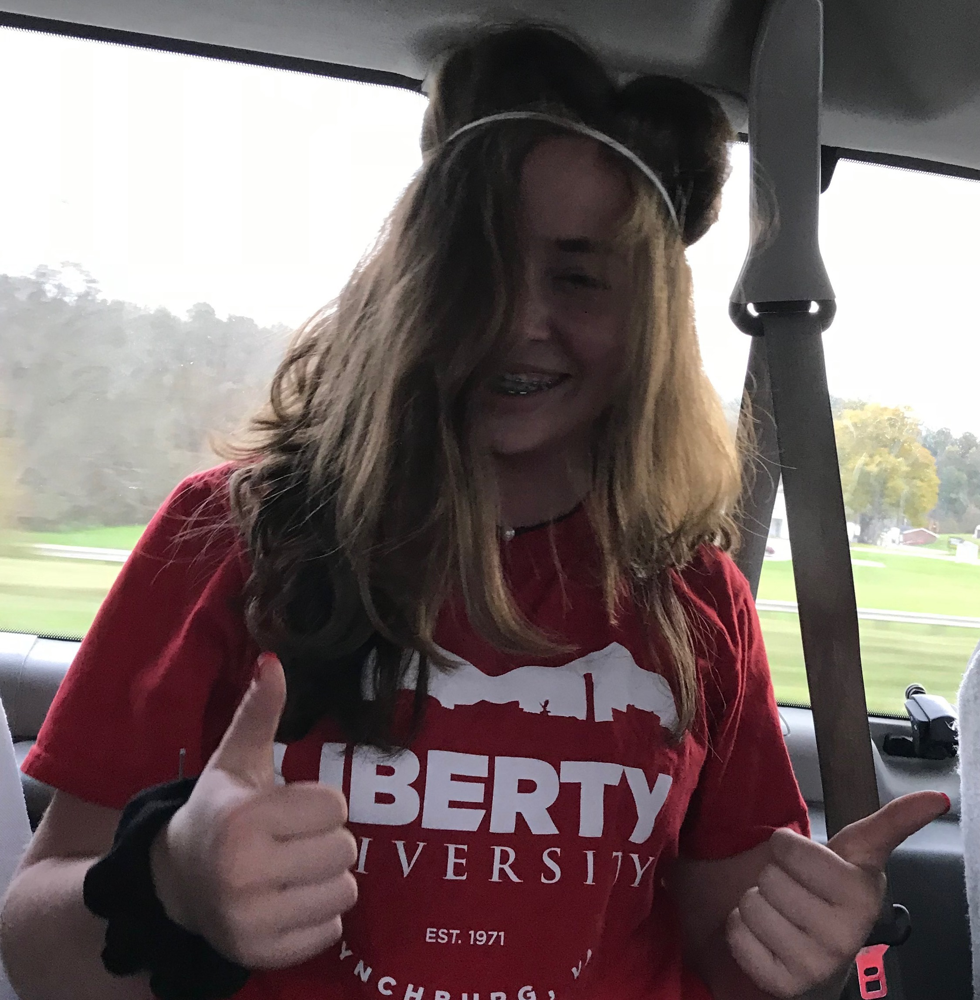
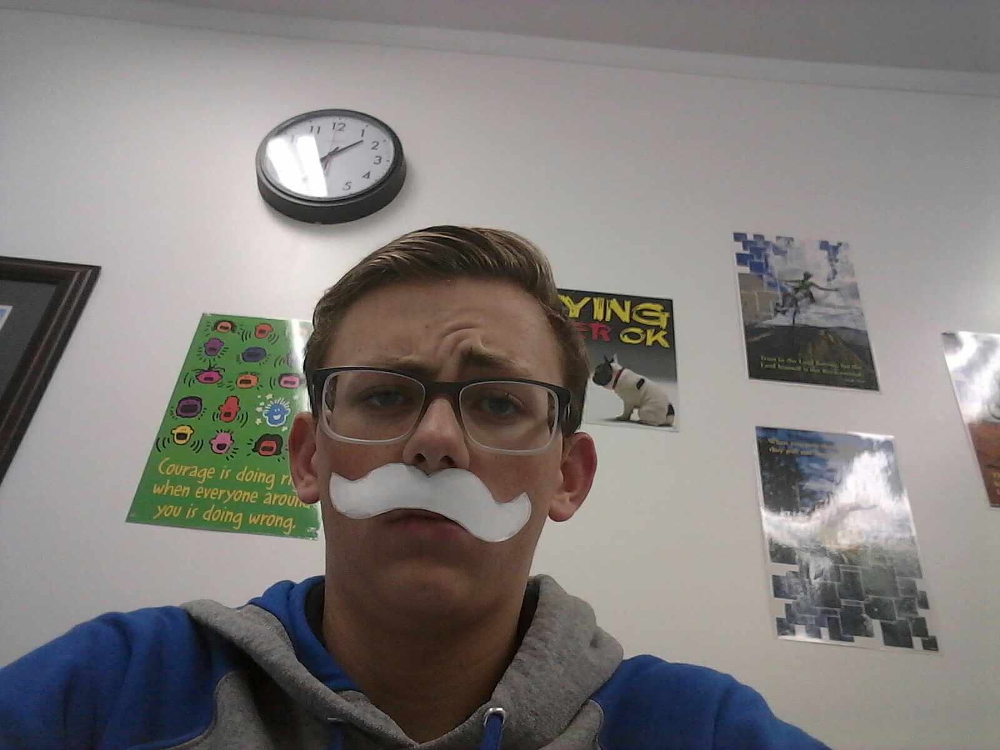
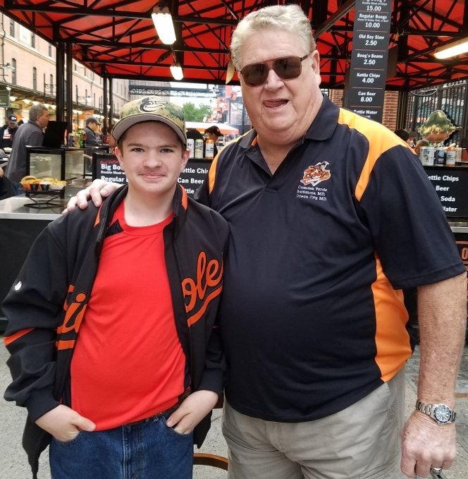

Review #1
Amanda DeOms: You're alright in my book, Mr. Eastwood...I'd like to buy you a drink. Hey, look, I don't want a drink. It was no big deal. (Marty is tapped on the back by the Gun Salesman. He's holding out a gun.) Young man, young man...I'd like you to have this brand new Colt Peacemaker and gun belt, free of charge! Free? (takes the gun and belt)(in a what's-wrong-with-you voice) Back to the future! (with conviction) Right. Let's get going. (he sets down his glass) Great. Gentlemen, excuse me, but my friend and I have to catch a train. Here's to ya, blacksmith. (He raises his glass in salute.)What the hell? (Suddenly there is a huge "boom" and Marty and Jennifer are thrown back. They land on the grass. A shiny train, with "ELB" written on the side, appears. Out of the cab window, Doc pops his head out.)

Review #2
Madison Timberlake: You're alright in my book, Mr. Eastwood...I'd like to buy you a drink. Hey, look, I don't want a drink. It was no big deal. (Marty is tapped on the back by the Gun Salesman. He's holding out a gun.) Young man, young man...I'd like you to have this brand new Colt Peacemaker and gun belt, free of charge! Free? (takes the gun and belt)(in a what's-wrong-with-you voice) Back to the future! (with conviction) Right. (Marty notices something. He uses the binoculars to check. It's his father, George, dancing by himself! George is there waiting to go and meet up with Lorraine and "Calvin".

Review #3
Jackson Crawford: You're alright in my book, Mr. Eastwood...I'd like to buy you a drink. Hey, look, I don't want a drink. It was no big deal. (Marty is tapped on the back by the Gun Salesman. He's holding out a gun.) Young man, young man...I'd like you to have this brand new Colt Peacemaker and gun belt, free of charge! Free? (takes the gun and belt)(in a what's-wrong-with-you voice) Back to the future! (with conviction) Right. (Marty notices something. He uses the binoculars to check. It's his father, George, dancing by himself! George is there waiting to go and meet up with Lorraine and "Calvin". Just get into the car, Tannen. Today's your lucky day. (Tannen Residence) (The car, driven by 2015 Biff, drives up towards the garage. The backs of the heads of both Biffs are visible.)(v.o)
Review #4
Finn Boehler: You're alright in my book, Mr. Eastwood...I'd like to buy you a drink. Hey, look, I don't want a drink. It was no big deal. (Marty is tapped on the back by the Gun Salesman. He's holding out a gun.) Young man, young man...I'd like you to have this brand new Colt Peacemaker and gun belt, free of charge! Free? (takes the gun and belt)(in a what's-wrong-with-you voice) Back to the future! (with conviction) Right. (Marty notices something. He uses the binoculars to check. It's his father, George, dancing by himself! George is there waiting to go and meet up with Lorraine and "Calvin". Just get into the car, Tannen. Today's your lucky day. (Tannen Residence) (The car, driven by 2015 Biff, drives up towards the garage. The backs of the heads of both Biffs are visible.)(v.o)

Review #5
Luke Jones: You're alright in my book, Mr. Eastwood...I'd like to buy you a drink. Hey, look, I don't want a drink. It was no big deal. (Marty is tapped on the back by the Gun Salesman. He's holding out a gun.) Young man, young man...I'd like you to have this brand new Colt Peacemaker and gun belt, free of charge! Free? (takes the gun and belt)(in a what's-wrong-with-you voice) Back to the future! (with conviction) Right. (Marty notices something. He uses the binoculars to check. It's his father, George, dancing by himself! George is there waiting to go and meet up with Lorraine and "Calvin". Just get into the car, Tannen. Today's your lucky day. (Tannen Residence) (The car, driven by 2015 Biff, drives up towards the garage. The backs of the heads of both Biffs are visible.)(v.o)
.png)